Cambiá fotos, piezas, medidas y textos desde el celular o la compu. Sin instalar nada y sin depender de nadie.
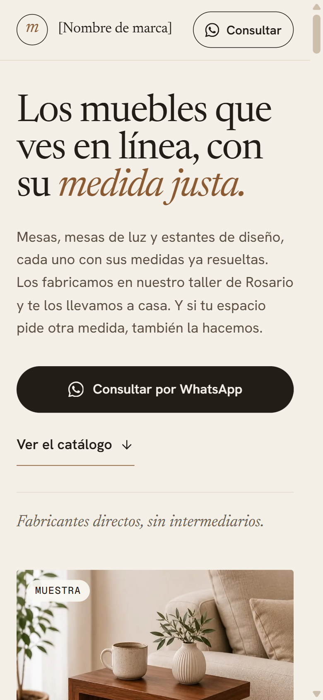
El panel es la parte privada de tu página. Desde ahí cambiás todo lo que se ve.
En el navegador del celular o de la compu:
muebles-medida-rosario.kusak.workers.dev/keystatic
Es el único botón que aparece.
La primera vez te llega un mail para confirmar. Después queda abierto en ese celular o compu.
En el celular, abrí el menú del navegador y elegí Agregar a pantalla de inicio. Te queda un ícono para entrar al panel con un toque.
Cuando la página tenga su dominio propio, la dirección del panel pasa a ser tudominio.com/keystatic. Todo lo demás sigue igual.
Al entrar ves todas las partes de tu página que podés cambiar, ordenadas en tres grupos.
El ícono de arriba a la izquierda abre el menú con todas las secciones. El botón azul Agregar crea algo nuevo en la sección donde estás.
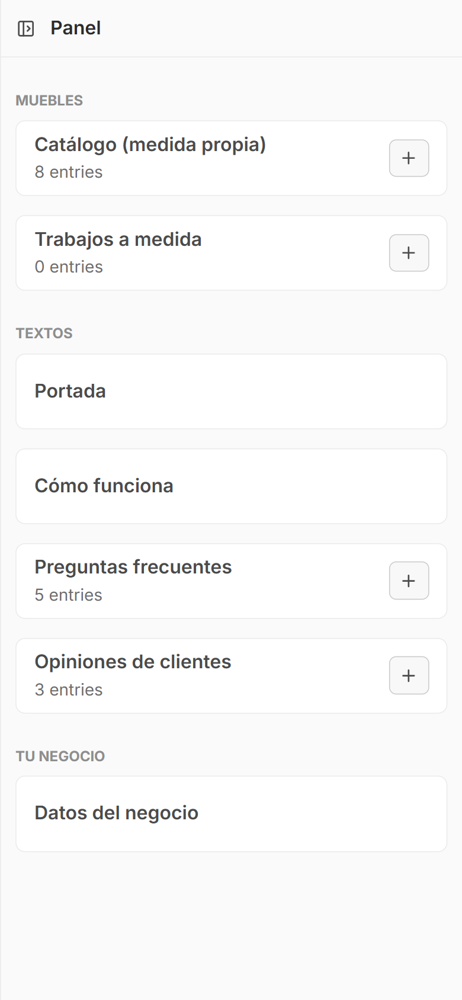
Podés sacar la foto en el momento o elegirla de la galería. No hace falta achicarla: la página la prepara sola.
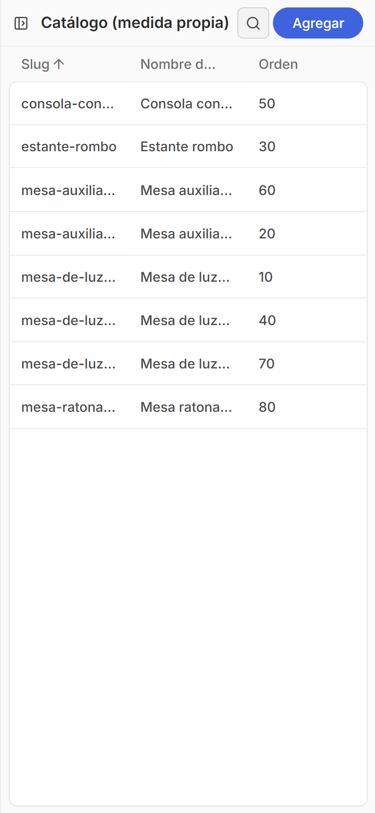
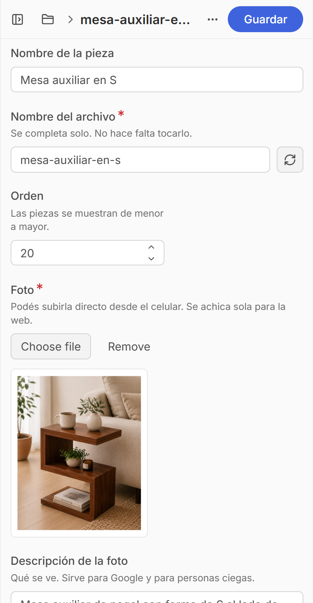
Tocá Catálogo (medida propia) y elegí la pieza.
Sacá la foto o elegila de la galería.
Así deja de aparecer la etiqueta "Muestra" (lo ves en la página siguiente).
Arriba a la derecha. En uno o dos minutos se ve en la página.
Más abajo en la misma ficha están los datos que aparecen al lado de cada foto.
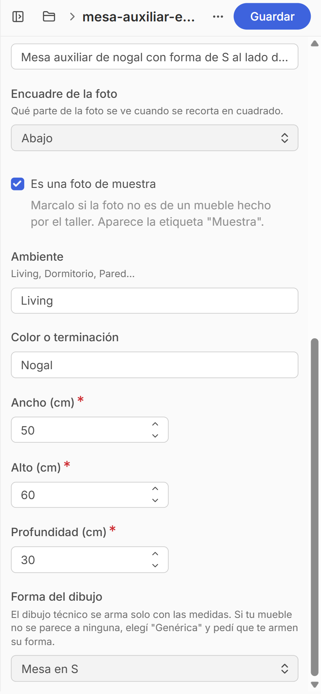
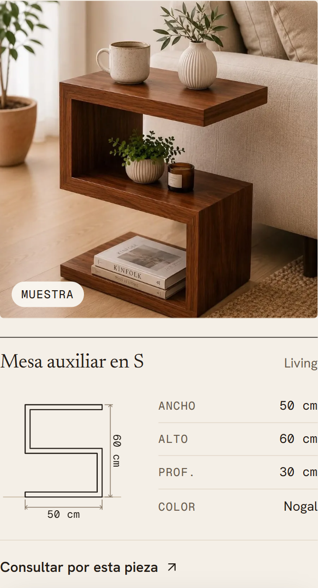
Cada pieza nueva aparece en el catálogo con su foto, sus medidas y su dibujo.
Se abre una ficha vacía.
El campo "Nombre del archivo" se completa solo: no hace falta tocarlo.
Ancho, alto y profundidad, más el ambiente y el color.
Si ninguna se parece, dejá Genérica: muestra una caja con las medidas.
El número más chico aparece primero.
Mandale a Lucas una foto del mueble y sus medidas. Lo dibuja y te queda como una forma nueva para elegir en el panel.
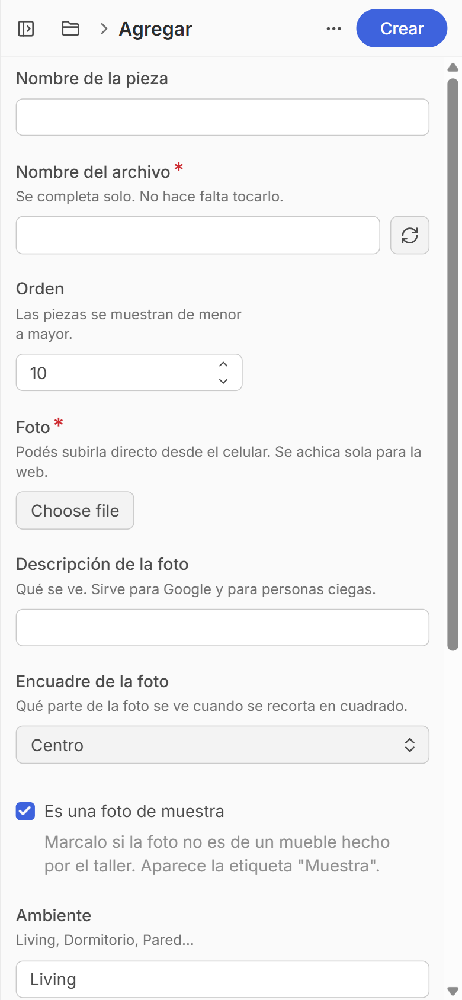
Revisá estos datos al principio: hoy algunos todavía tienen textos de ejemplo entre corchetes.
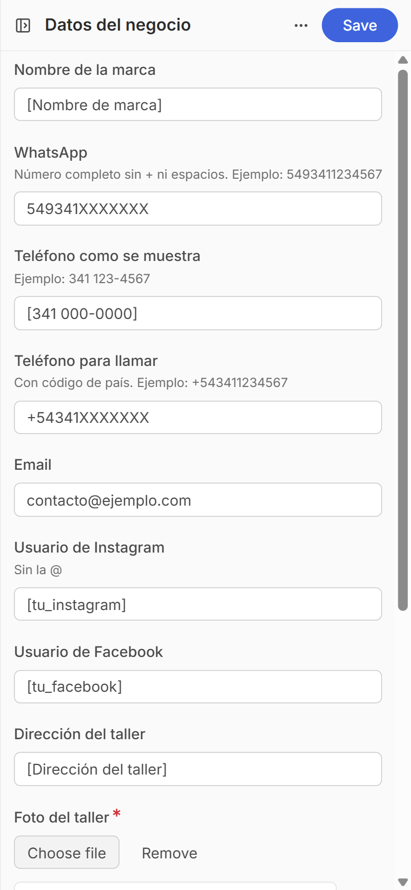
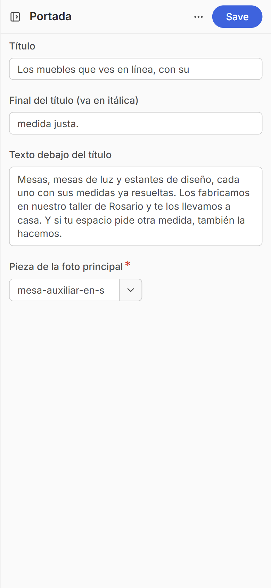
El WhatsApp va completo, sin + ni espacios: 5493411234567. De ahí salen todos los botones de consulta de la página. Cuando cargues tu nombre, teléfono y dirección, desaparecen los corchetes.
El título tiene dos partes: la segunda va en itálica y color madera. Abajo elegís qué pieza sale en la foto grande. Para guardar acá el botón dice Save.
Las fotos venden. Con el celular alcanza si seguís estas ideas.
Cerca de una ventana, sin flash y sin luces amarillas de techo.
Una pared lisa y clara. Sacá lo que no suma.
Con dos o tres objetos como mucho: un florero, una taza, unos libros.
La página recorta la foto en cuadrado: dejá espacio alrededor del mueble.
El celular a la altura de la mitad del mueble, un poco de costado.
Pasale un trapito antes de sacar. Se nota más de lo que parece.
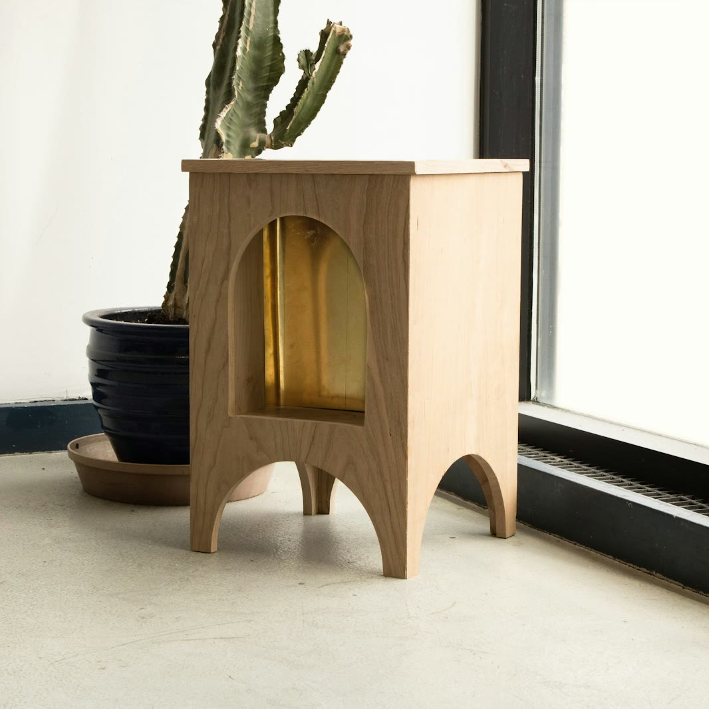
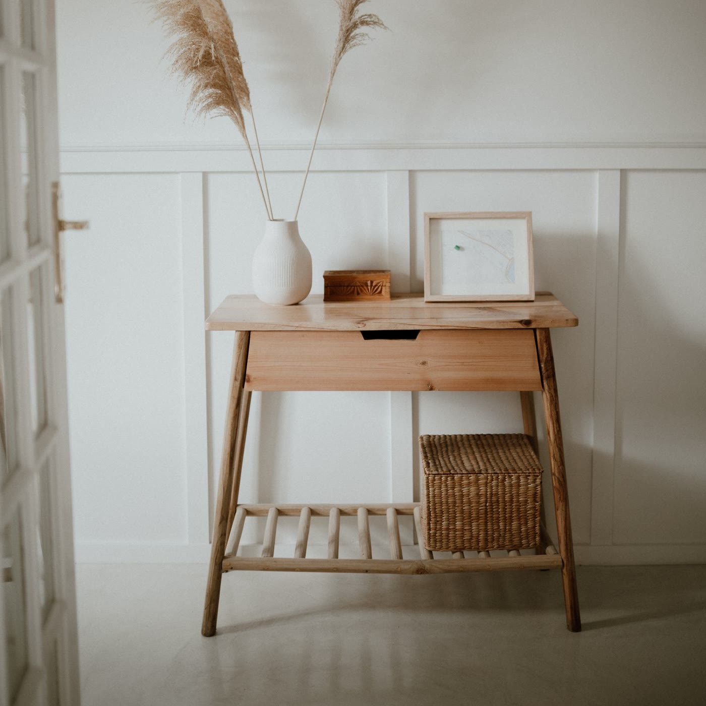
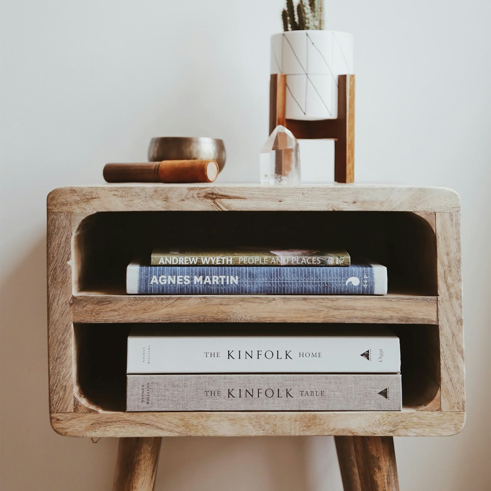
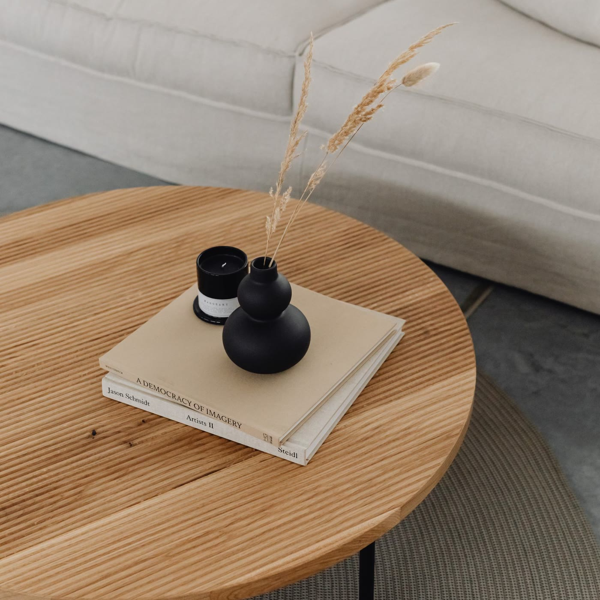
Fotos de referencia del estilo que buscamos.
Después de guardar, la página se actualiza sola en uno o dos minutos. Si no lo ves, recargá la página.
No se rompe nada: cada cambio queda guardado y se puede volver atrás. Escribile a Lucas.